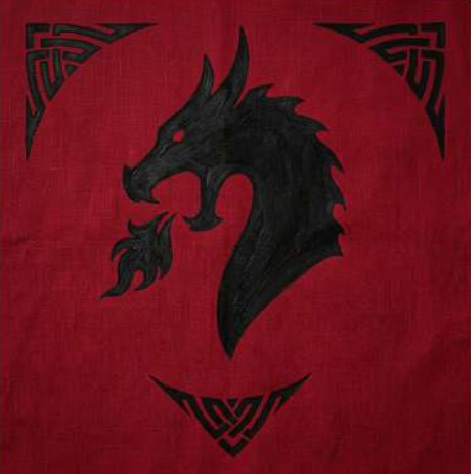
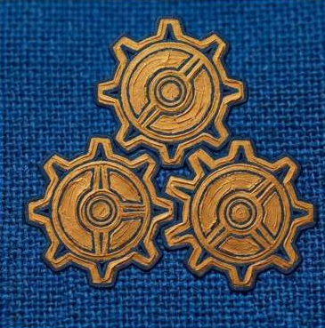
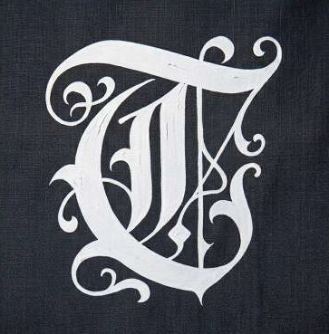
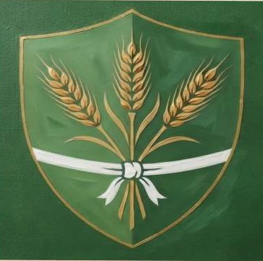
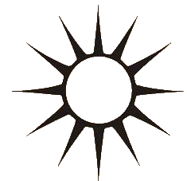
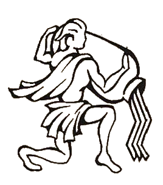
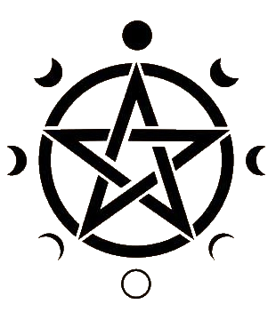
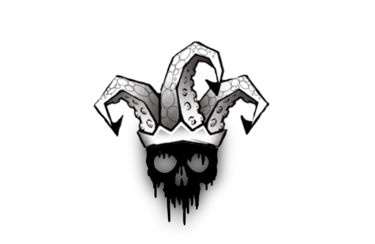

Abissidia non tace mai; canta un corale antico e inquieto, intessuto dalle maree che sferzano un arcipelago sconfinato. Tra le sue acque insidiose si erge un mosaico di terre emerse, alcune tracciate con inchiostro fermo sulle pergamene dei cartografi, altre celate dietro banchi di nebbia perenne, dove la terra incontra l'ignoto. A dominare queste acque sono i Quattro Pilastri del Mondo Emerso:
- Aurelia, fiera e luminosa;
- Thalassia, culla dei venti e delle correnti;
- Daelesia, avvolta nel mistero delle sue secolari tradizioni;
- Pyros, forgia di roccia e fuoco.
Attorno a questi giganti gravita una costellazione di isole minori: scogli remoti che danno dimora a comunità isolate o divengono l'ultimo rifugio per i fuorilegge del mare, corsari senza patria che attendono nell'ombra il passaggio delle stive piene.
Nei porti di tutta Absidia, la storia non si legge nei libri, ma si respira. Echeggia tra le travi marcite delle taverne più infime, mescolata all'odore di rum e salsedine, e risuona nei saloni dorati dei signori delle isole, celebrata in banchetti sfarzosi. Si narra di imprese leggendarie, di eroi dimenticati e di tesori inghiottiti dalle sfere abissali.
Su tutte le terre e i mari di Absidia, lo scorrere degli anni è scandito da un ciclo immutabile di dodici mesi, suddivisi nel susseguirsi di quattro grandi stagioni.
L'anno ha inizio tra le morsa del freddo con Hiems, la stagione dei venti gelidi e delle mareggiate, composta dai mesi di Decembrus, Iennarus e Februs. A essa segue Ver, il tempo della rinascita e del risveglio della natura, dove le temperature si fanno miti e i venti favorevoli sotto il segno di Marz, Aprilius e Maius. Con l'arrivo di lunius, Quintilis e Sixtilis il mondo sprofonda nella morsa della grande calura di Estat, la stagione del sole alto e dei mari tranquilli. Infine giunge Augerum, la stagione della marea calante e della mietitura composta da Settembrus, Ottobrus e Novembrus, un periodo benedetto in cui la terra offre i suoi frutti e le comunità si preparano ai mesi rigidi.
Attualmente, il mondo attraversa l'Anno 1000 dall'Epopea di Yuri. Questa datazione solenne segna il millennio trascorso dalla stesura della primissima opera scritta della storia: il leggendario tomo che diede inizio alla memoria di tutta Absidia. Del contenuto originale di quella prima cronaca, tuttavia, si sa ben poco. Il tomo venerato è gelosamente custodito e sigillato nelle profondità della Grande Biblioteca del Sapere, tra le imponenti torri d'avorio di Aurelia, dove solo gli archivisti più fidati e gli studiosi di alto rango possono posare le loro pagine consumate dal tempo.
A tenere saldo il filo della civiltà in questo mondo frammentato è la Flotta delle Maree. Questa gilda neutrale sfidando le tempeste e i pirati con una flotta di agili imbarcazioni, garantisce il flusso continuo di merci, dispacci e anime da un capo all'altro del mare conoscendo ogni rotta, dalle rotte commerciali più battute fino agli approdi più reconditi.
Ma un'ombra strisciante avvelena la vita dell'arcipelago. Dalle profondità emerse una piaga abominevole: i Profani. Umanoidi aberranti e insaziabili, queste creature devastano i villaggi costieri spinte da un'infinita fame di carne umana. Nessuno conosce la loro vera origine. Nei racconti dei marinai si sussurra che siano uomini caduti sotto il peso di un'antica maledizione, o forse l'orribile progenie di una divinità giacente negli abissi, nutrita dal male della storia umana e venuta a galla con un unico, spaventoso scopo: mondare il mondo dagli uomini attraverso il sangue.
Oggi le terre e le acque di Absidia respirano un'aria di lenta ma ostinata ripresa, riemergendo a fatica dalle ombre della devastante Guerra del Mare, un conflitto che per anni ha insanguinato l'intero mondo conosciuto. A trent'anni dalla sua caduta, della Stella Maris non resta ormai che un amaro e oscuro ricordo.
In origine, la Stella Maris non nacque come un'istituzione tirannica, bensì come un supremo baluardo di pace voluto dai Signori delle quattro isole maggiori. Per evitare che una fazione prendesse il sopravvento sulle altre e per mantenere l'equilibrio politico ed economico di Absidia, i regnanti redassero il Codex Maris: una solenne carta di leggi intesa ad autoimporre limiti inviolabili a ogni corona. Per vigilare sul rispetto di questo codice nacque la Stella Maris, un ordine neutrale a cui chiunque poteva arruolarsi, previo un rigido addestramento e un giuramento d'intoccabile fetteltà[cite: 7]. Alla guida di questa forza fu posto l'Ammiraglio Anassandro, figlio di Re Teleclo, signore di Solaria: un condottiero austero, ligio al dovere e già leggendario in tutto il mondo conosciuto per le sue imbattibili gesta eroiche.
La pace, tuttavia, fu divorata dall'avidità e dalla debolezza degli uomini. Nel corso degli anni, il Codex Maris venne ripetutamente infranto: non solo da pirati e popolani, ma dai Signori stessi delle isole maggiori, intenti a trame di potere nell'ombra. Di fronte alle crescenti infrazioni, la risposta della Stella Maris si fece sempre più dura e inflessibile. Gli interventi di controllo sfociarono gradualmente in un severo estremismo militare, trasformando gli antichi protettori in spietati inquisitori dei mari.
Il definitivo punto di rottura giunse con un gesto d'irrimediabile ferocia: l'assassinio di Frederic Ulrich, erede al trono di Thalassia e figlio di Morgan XIV, per mano di un ufficiale della stessa Stella Maris, il Capitano Larson. L'eccidio scosse l'intero mondo. Al termine del drammatico Gran Concilio delle Maree, tre delle grandi potenze Pyros, Daelesia e Thalassia - calarono ogni indugio e dichiararono apertamente guerra alla Stella Maris per spezzare il suo giogo soffocante. L'isola di Aurelia scelse di mantenere la neutralità ufficiale nel conflitto, pur sostenendo ingenti risorse economiche e rifornimenti a favore delle altre tre sorelle.
Fu l'inizio di una carneficina d'acciaio che cambiò per sempre il volto di Absidia, portando infine al definitivo e sanguinoso crollo dell'Ordine dell'Ammiraglio Anassandro.
A tenere saldo il filo della civiltà in questo mondo frammentato non è una sola città, né una fortezza isolata, ma la Flotta delle Maree, nota anche come Il Convoglio delle Maree. Non si tratta di una singola nave gigante, ma di una vera e propria città fluttuante in costante movimento: un nucleo compatto di mercantili, navi da carico, agili feluche veloci e sciabecchi d'assalto che navigano a vista mantenendo sempre la stessa formazione serrata. Le navi più pesanti custodiscono al centro le merci e il bene più prezioso di Abissidia- l'acqua dolce -, mentre i vascelli più leggeri pattugliano il perimetro per respingere ogni minaccia.
A bordo della Flotta non contano i titoli di nobiltà dei regni: ogni marinaio, mercante o viaggiatore risponde unicamente al Codice della Flotta, una carta di leggi scritte che ciascuno deve firmare all'imbarco. Il Codice punisce senza appello l'ammutinamento, il furto e, sopra ogni cosa, lo spreco o il sabotaggio delle scorte idriche. Sul mare, infatti, l'acqua dolce e le vettovaglie sono l'unica vera moneta che conta. Per riempire le botti e fare scorta di legname, la Flotta è costretta a continui e pericolosi sbarchi sulle isole minori, esponendosi agli agguati dei pirati e all'orrore delle terre inesplorate.
La vita del Convoglio è guidata dall'Assemblea della Flotta, un consiglio che si riunisce sulla Nave Ammiraglia e che unisce i ruoli chiave per la sopravvivenza in mare aperto:
- L'Ammiraglio del Convoglio: guida la rotta politica, cura i rapporti commerciali con i Signori delle Isole e amministra le finanze comuni.
- Il Capitano dei Fanti di Marina: comanda i soldati e la difesa armata contro i pirati e le abominevoli creature degli abissi durante gli arrembaggi e gli sbarchi.
- Il Primo Navigatore (o Vedetta): esperto di cartografia, venti e correnti, responsabile di tracciare la via e scovare risorse sugli atolli remoti.
- Il Mastro d'Ascia e Carpentiere: sovrintende alle riparazioni degli scafi, all'artiglieria leggera e alle scorte di legno e pece.
- Il Magistrato di Bordo: garante dell'ordine e della disciplina interna, applica inflessibilmente il Codice della Flotta tra i membri dell'equipaggio.
La routine del mare è scandita dal suono di campane: tre tocchi distanziati risuonano nell'aria per annunciare l'ingresso in un porto sicuro o l'inizio di un incontro politico; cinque tocchi brevi e frenetici gettano la nave nel caos della battaglia, segnalando un attacco imminente o la presenza dei Profani a bordo.
Le Grandi Rotte di Abissidia Per solcare estos mari senza finire inghiottiti dalle correnti o dalle cacciatrici dell'abisso, la Carovana fa affidamento su tre grandi vie d'acqua:
- La Grande Spina d'Oro: È l'arteria vitale di Benthos, una rotta circolare e costantemente pattugliata che collega direttamente le Quattro Isole Maggiori (Aurelia, Thalassia, Daelesia e Pyros). È la via più sicura e battuta, lungo la quale viaggiano i carichi più ricchi di spezie, grano, metalli e armi.
- Il Sentiero del Sale: Una fitta ed esposta rete di vie secondarie che si dirama dalle isole principali per addentrarsi tra gli arcipelaghi minori e gli approdi isolati. Lungo questa rotta la Flotta si spinge per commerciare con i piccoli popoli e fare rifornimento d'acqua dolce, affrontando il rischio costante degli attacchi dei pirati della Stella Maris o delle incursioni dei Drow.
- La Rotta di Foschia (Le Rotte Buie): Vie navali prive di mappe ufficiali che si inoltrano direttamente nei banchi di nebbia perenne. Vengono percorse solo dai Primi Navigatori più audaci e dai Capitani più esperti per trasportare carichi riservati, seminare gl'inseguitori o aggirare i bracci di mare infestati dai Profani.

Araldica: Testa di Drago sputa fuoco nera su sfondo rosso
Motto: "Una morte onesta è meglio di una vita vergognosa"
L'orizzonte che circonda Pyros non è mai terso: è perennemente sbarrato da maestosi pennacchi di fumo nero e rossastro che si levano dalle viscere del vulcano principale, tingendo il cielo di un perenne tramonto sanguigno. Se Daelesia è il polo ingegneristico e barocco dell'arcipelago di Abissidia, Pyros ne rappresenta la forza collettiva bruta, il cuore minerario e alchemico indiscusso guidato dalla rigida disciplina del Partito del Ferro e del Fuoco.
Il Popolo delle Ceneri
Gli abitanti di Pyros sono un popolo con tempra antica e stazza imponente. Dalla corporatura robusta, con lunghe barbe intrecciate, chiome bionde o fulve e la pelle irrimediabilmente segnata dalla cenere, dal calore e dai tatuaggi, portano sul corpo le cicatrici del lavoro alle fucine. L'abbigliamento riflette la durezza del clima vulcanico e della loro cultura: tuniche pesanti imbottite con inserti di metallo, mantelli in pelli di orso macchiati di fuliggine, brigandine di ferro brunito e alti stivali di cuoio rinforzato. Non conoscono la vanità dei pizzi o il lusso ostentato; per questa gente la bellezza risiede nella tenacia d'un maglio che batte e nella forza d'animo di chi sfida la furia della terra.
Fuoco, Collettivismo e Metallo
Pyros non è un'unica terra emersa, ma un piccolo e compatto arcipelago formato dai coni vulcanici e dalle bocche secondarie sorte attorno all'Isola Madre.
- Isola Madre e la Città del Popolo: Sulle pendici del monte centrale si erge l'imponente fortezza cittadina, protetta da mura di pietra basaltica che sfidano la lava, dove non esistono titoli o proprietà private, ma enormi complessi industriali statali, cisterne comuni e fucine sotterranee.
- I Denti del Vulcano: Attorno alla capitale si dirama una costellazione di atolli satelliti ricchi di miniere a cielo aperto e gallerie da cui le brigate di lavoro estraggono zolfo, salnitro, carbone, ferro ad altissima resistenza e gemme vulcaniche come ossidiana e rubini di cenere. Le strade sono pattugliate dalla Guardia di Basalto, la forza armata del popolo che scorta e vigila sui depositi di Stato dove vengono stoccati i lingotti di ferro, le risorse e le riserve di Polvere Nera Pura.
Il Partito, le Votazioni e il Consiglio
La politica di Pyros non segue dinastie di sangue: l'autorità scaturisce dal lavoro e dalla volontà comune. Il governo è retto dal Partito del Ferro e del Fuoco, l'unica grande fazione ideologica dell'isola. Ogni tre anni, nei vari distretti vulcanici e negli atolli-miniera si tengono le Votazioni del Maglio. I cavatori, gli alchimisti e i fonditori si radunano per esprimere il proprio voto depositando tessere di ghisa numerate nei crogioli della gilda, eleggendo i propri Rappresentanti dei Comitati di Fabbrica e di Miniera. Sono questi rappresentanti a comporre la Grande Assemblea del Partito, la quale poi vota per eleggere o riconfermare il Consiglio Supremo.
Al vertice della guida politica siede il Commissario Supremo Sven Ivarson "Il Giovane". Imponente, con il volto segnato dalla cenere e una mantellina di pelle d'orso sopra un'armatura di ferro brunito, Ivarson è la guida del Partito, rieletto a plebiscito per il suo pragmatismo spietato. Rifiutando i titoli di corte, dirige il Piano di Produzione dell'isola, decide le razioni di cibo, firma i trattati commerciali e tiene in pugno le rotte dei minerali per la difesa della collettività.
Ad affiancarlo vi è il Consiglio dei Tre Alchimisti, anch'essi confermati dalle votazioni dell'Assemblea:
- Torstein "Mani di Zolfo" (Primo Alchimista): L'anziano e paranoico Maestro dei Dosaggi, custode della formula segreta della Polvere Nera Pura. Analizza e decide la quota di produzione e il prezzo di Stato della polvere immessa sul mercato.
- Astrid "La Tagliatrice di Pietra" (Secondo Alchimista): Ex fabbro e agitatrice d'assemblea che gestisce l'estrazione del ferro e la requisizione delle pietre preziose usate come garanzia finanziaria statale per acquistare cibo e acqua.
- Einar "L'Ingegnere della Cenere" (Terzo Alchimista): Uomo silenzioso segnato dalle cicatrici delle esplosioni, responsabile della sicurezza delle polveriere sotterranee e della fusione pianificata dei lingotti nei magli d'acciaio.
Il Monopolio Statale e le Tensioni con Daelesia
L'economia di Pyros risponde ai piani d'estrazione stabiliti dal Partito: possiede le riserve minerarie più ricche del mondo conosciuto. Tuttavia, la natura arida dell'isola la rende del tutto priva di campi coltivati o sorgenti d'acqua dolce. Per sfamare il popolo, il Partito esporta ferro grezzo e gemme preziose, ma soprattutto, la Polvere Nera acquistata esclusivamente dall’isola di Daelesia.
I Pyrosiani provano un profondo disprezzo per i padroni e i mecenati di Daelesia, considerandoli parassiti viziati che si pavoneggiano per la raffinatezza delle loro armi solo dopo che i cavatori di Pyros hanno versato sangue nelle miniere. Daelesia, dal canto suo, considera il governo di Pyros una rozza ed eversiva tirannia di popolani e metallurgisti.
Vigilanza Antisabotaggio:
Il Commissario Einar e la Guardia di Basalto mantengono lo stato di allerta permanente: sanno che le spie cercano costantemente di infiltrarsi per rubare la formula della Polvere Nera Pura o sabotare i comitati di produzione.

Araldica: Tre ingranaggi d’oro su sfondo blu
Motto: "La Bellezza è la Forma, l'Acciaio è la Forza."
L'aria di Daelesia ha il sapore inconfondibile della fuliggine impastata alla salsedine, un aroma acre che si mescola al profumo penetrante dell'olio di noce usato dagli artigiani per lucidare i legni pregiati. Se Thalassia è la regina dei venti e Pyros la culla del metallo grezzo, Daelesia è il cuore battente, contraddittorio e superbo dell'ingegno umano: una fortezza di imponenti scogliere grigie ed erose dove l'eleganza barocca si fonde con la spietata precisione dell'ingegneria marziale.
La Città dell'Acciaio e del Marmo
A Daelesia la bellezza estetico-artistica e la letalità bellica camminano d'appresso, legate a doppio filo. La capitale, incastrata tra le rocce e mossa dai fiumi veloci che azionano imponenti magli idraulici e soffietti industriali, vive in una perenne e affascinante dualità:
- L'Arte dell'Acciaio e del Marmo: I maestri d'arme non si accontentano di un archibugio puramente funzionale; l'arma deve essere un capolavoro d'arte. Le canne degli archibugi e delle artiglierie vengono intagliate con bassorilievi minuziosi, le else delle spade cesellate con pietre preziose, e gli abiti sfarzosi della nobiltà ricchi di pizzi colorati mostrano con orgoglio i bordi imbrattati dall'olio scuro dei meccanismi.
- I Mecenati del Sangue: I nobili e i grandi industriali delle corporazioni gareggiano per finanziare pittori, scultori e musicisti. Gli stessi maestosi teatri d'opera dell'isola sorgono spesso a pochissimi metri dai laboratori, mentre le élite in giacca piumata applaudono le più sublimi sinfonie, operai lavorano per produrre.
Ernest Von Berg e il Monopolio di Stato
La fortuna tecnologica dell'isola fu segnata dal genio di Ernest Von Berg, il pioniere che progettò e realizzò i primi archibugi dell'arcipelago. Intuendo l'immenso valore della sua invenzione, Von Berg fondò le prime manifatture private, commercializzando le armi da fuoco in tutte le acque di Abissidia e arricchendosi a dismisura nell'arco di pochi anni.
Tuttavia, la sua parabola si interruppe bruscamente: dopo nemmeno un decennio di successi, Von Berg morì in circostanze mai del tutto chiarite. Lo Stato di Daelesia intervenne immediatamente, requisendo le fabbriche, prendendo il controllo dei brevetti e vietando tassativamente la vendita o la cessione delle armi al di fuori dei propri confini.
Da quel momento, la produzione rimase un segreto gelosamente custodito dall'isola. Le uniche armi da fuoco reperibili presso i mercanti, i capitani del Convoglio o i fuorilegge del mare sono i vecchi modelli di prima generazione venduti da Von Berg decenni prima: manufatti logori, mal funzionanti, inclini ad incepparsi o ad esplodere se caricati con polveri scadenti.
Il Consiglio delle Corporazioni e i Tre Magistrati
L'ossatura politica di Daelesia si regge su un solido modello federale e capitalistico, fortemente dominato dai grandi capitali e dal peso delle varie gilde industriali e artistiche. Al vertice di questo complesso ingranaggio siede l'Alto Maresciallo Wilhelm Von Krank, figura di raccordo tra le ambizioni delle corporazioni e l'autorità militare del regno.
Per garantire che la produzione, l'arte e l'ordine procedano al medesimo ritmo millimetrico, il governo esecutivo è affidato al Collegio dei Tre Magistrati:
- Il Mastro delle Fonderie e della Fusione: Rappresentante delle potenti corporazioni siderurgiche, sovrintende alla produzione metallurgica, al controllo di qualità e alla rigida ingegneria marziale.
- Il Mastro Architetto e Mecenate: Portavoce delle corporazioni degli artisti e dei costruttori. Gestisce le imponenti opere pubbliche, la propaganda di Stato, i teatri d'opera e l'estetica sfarzosa dell'isola.
- Il Custode dei Progetti: Una figura d'ombra che sorveglia l'accesso ai laboratori sotterranei, la custodia dei brevetti statali, garantendo che i segreti industriali della confederazione non varchino mai i confini dell'isola.
I Rapporti Diplomatici e l'Equilibrio con le Altre Isole
Nei banchi del Concilio e nei saloni dorati di Daelesia si gioca una partita diplomatica fredda, complessa e calcolata, guidata esclusivamente dagli interessi economici delle corporazioni:
- Tensione Economica con Pyros: Pur vantando le tecniche di fusione e lavorazione più avanzate di tutto il mondo conosciuto, Daelesia difetta quasi totalmente di giacimenti minerari. Per mantenere in funzione il proprio apparato industriale, la confederazione è legata a Pyros da rigidi accordi commerciali per l'importazione di ferro grezzo e reagenti alchemici. Tuttavia, mentre le corporazioni di Daelesia considerano i fornitori di Pyros semplici estrattori privi di raffinatezza, sono costrette a pagare a caro prezzo la materia prima per non rischiare il blocco delle fonderie.
- Diplomazia e Sospetti con la Flotta e le Altre Isole: Con le altre Isole Maggiori e con la Flotta del Convoglio, Daelesia mantiene una facciata di inappuntabile neutralità commerciale. Le corporazioni esportano manufatti d'ingegneria civile, orologi ad ingranaggi, strumenti di navigazione e capolavori d'arte. In pubblico, Daelesia rispetta scrupolosamente i trattati marittimi; tuttavia, dietro i cancelli chiusi dei cantieri statali e l'inflessibile riserbo del Custode dei Progetti, si rincorrono voci di strani movimenti di merci e proiezioni industriali riservate, alimentando i sospetti delle spie straniere che tentano invano di infiltrarsi nella città dell'acciaio.

Vessillo: Una [lettera "T"] bianca su sfondo nero.
Motto: "Siam figli del Mare e della Corona"
L'orizzonte di Thalassia non è segnato dai fumi d'acciaio né dalla cenere vulcanica, ma dalle imponenti chiome di Legno Pietra che dominano le scogliere della rotta centrale, circondate dal sistema di atolli satelliti noto come Le Isole del Vento. Se Daelesia rappresenta l'ingegneria e Pyros la forgia delle materie prime, Thalassia è un grande e sfarzoso Regno marittimo, fondato sull'ostentazione nobiliare, sul rigido controllo feudale e su una spietata politica di dominio e sfruttamento coloniale.
La Corona, la Nobiltà e il Dominio Coloniale
Il regno risponde all'autorità incontestata di Re Morgan III, sovrano di una dinastia che ha fatto dei mari il proprio impero. La capitale del regno è Magnifica, una metropoli colossale ed elegante fatta di marmi chiari, cattedrali maestose e palazzi nobiliari ad arcate. Magnifica affaccia sul mare attraverso Bianco Porto, la baia fortificata dalle cui scogliere di gesso candido salpano le navi reali.
La Cultura e le Cariche Nobiliari: La società è plasmata da un rigido classismo. Duchi, conti e baroni competono in sfarzo e decoro. I nobili indossano pesanti giacconi di velluto e seta blu notte, decorati con ricami in filo d'oro, pizzi finissimi immacolati, tricorni piumati e portano al fianco stiscette e sciabole finemente cesellate.
I Governatori Coloniali e lo Sfruttamento: Il regno è suddiviso in ducati e contee, ma i titoli di maggior prestigio e guadagno sono i ruoli di Governatore Coloniale. Assegnati dal re alle grandi casate, questi amministratori gestiscono con pugno di ferro le isole minori conquistate. Tali colonie vengono sistematicamente prosciugate delle loro risorse naturali: popolazioni locali schiavizzate o piegate al lavoro forzato, piantagioni esotiche, cave e spezie rare vengono spremute per arricchire i palazzi di Magnifica e le casse della Corona.
I Cantieri Navali e il Legame con la Flotta delle Maree
L'economia di Thalassia si regge sul controllo del legno e sui titanici cantieri navali di Bianco Porto. Qui, mastro-fonditori ed ebanisti reali lavorano a ritmo continuo per costruire i vascelli e le fregate da guerra più imponenti dell'arcipelago. Per garantire il flusso costante di ricchezze e materie prime provenienti dalle colonie e dalle isole minori verso la capitale, la Corona stipulò un patto strategico con la Flotta delle Maree.
- Esenzione dai Dazi e Privilegi Doganali: I bastimenti mercantili della Carovana delle Maree godono dell'esenzione totale da qualsiasi dazio di ancoraggio o tassa d'entrata nei moli di Bianco Porto e nelle colonie regie. In cambio di questo monopolio fiscale preferenziale, la Flotta si impegna a trasportare le risorse estratte dai Governatori Coloniali a tariffe calmierate e con corsie prioritarie.
- Supporto Logistico e Rifornimenti prioritari: L'accordo garantisce ai mercanti della Flotta il diritto esclusivo di rifornimento di acqua dolce, viveri e legname da riparazione presso le banchine dei cantieri reali. Le navi del Convoglio possono così effettuare manutenzioni rapide e fare scorta di provviste senza fare lunghe file nei porti, assicurando che le rotte tra le isole minori e Magnifica rimangano sempre attive.
Il Patto di Sangue e di Sale: La Nascita dei Corsari
La trasformazione di Thalassia in una potenza incontestata risale al regno del fondatore della dinastia di Re Morgan X. L'arcipelago era dilaniato dalla piaga di bande pirata spietate che attaccavano ogni rotta, rendendo impossibile il commercio. Consapevole che una guerra totale avrebbe dissanguato le casse del regno, Morgan X propose una soluzione audace, convocando a Bianco Porto i più temuti capitani dei mari e offrendo loro un'alternativa: l'impiccagione o l'amnistia totale accompagnata dal titolo di Corsari della Corona, con tanto di Lettere di Corsa Ufficiali.
Il primo a piegarsi ed accettare l'accordo fu William "Pescecane", il più feroce e leggendario capobanda dell'epoca. Sul ponte di comando della nave ammiraglia reale, Pescecane depose la sua sciabola insanguinata ai piedi di Morgan X e firmò la prima Lettera di Corsa, giurando fedeltà alla Corona. In cambio della protezione nei porti del regno e del diritto di vendere i bottini alle aste di Magnifica, Pescecane e chi lo seguì si impegnarono a versare una quota d'oro alle casse reali e a cacciare esclusivamente le navi nemiche e i pirati che rifiutavano la legge del Re. Fu così che nacque la Compagnia Liberas, l'istituzione reale che ancora oggi coordina le flotti corsare e l'esplorazione coloniale delle isole minori.
Tensioni Geopolitiche
La Corte di Magnifica osserva il mondo esterno con freddo calcolo:
- Minaccia Tecnologica Daelesiana: Re Morgan XV sa che le sue fregate dominano i mari grazie alla manovrabilità e alla resistenza del Legno di Pietra. Tuttavia, sa anche che su terra ferma Daelesia avrebbe la meglio, vista la forza dell'imponente armamentario che detiene.
- Dipendenza Strategica da Pyros: Per armare i rostri dei galeoni e forgiare i rinforzi metallici dei cantieri di Bianco Porto, Thalassia importa enormi partite di ferro da Pyros. Re Morgan XV paga queste scorte con l'oro e le risorse estratte dalle colonie, mantenendo una tregua diplomatica.

Araldica: Tre spighe di grano dorato cinte di bianco su campo verde
Motto: "Ogni debito va onorato"
L'orizzonte di Aurelia appare ai naviganti come un'immensa distesa dorata e rigogliosa, dove la vista spazia tra dolci colline coltivate a grano, vigneti e uliveti secolari sostenuti da una rete monumentale di canalizzazioni d'acqua dolce. Se Daelesia è il polo dell'ingegneria, Pyros la forgia dei metalli e Thalassia la sovrana delle navi, Aurelia è il cuore agricolo, finanziario e neutrale del mondo conosciuto: il luogo dove la vita stessa si compra con l'oro e con il pane.
La Capitale e l'Aristocrazia Finanziaria
La capitale dell'isola ne condivide il nome: Aurelia è una splendida metropoli costiera costruita su una vasta laguna, un labirinto di canali navigabili, ponti di marmo bianco, palazzi finemente affrescati e immensi depositi blindati ne compongono la struttura urbana. Lungo i canali scorrono imponenti imbarcazioni che trasportano cereali e lingotti d'oro verso la Banca Centralis e i Granai di Stato.
L'Estetica e la Società
La vita della capitale è dominata da un'élite di banchieri e proprietari terrieri. L'aristocrazia veste con pesanti velluti rosso porpora e verde smeraldo, mantelli bordati d'ermellino, berretti di stoffa pregiata e anelli con sigilli d'oro. Tra le pieghe degli abiti eleganti, tuttavia, ogni nobiluomo cela affilati pugnali stiletto.
Potere Senza Armi
Aurelia controlla il cibo (grano e risorse idriche) e il credito dell'arcipelago. Nessun'altra isola può sfamare la popolazione né finanziare grandi opere o guerre senza trattare con i banchieri aureliani. Per la sicurezza interna si affida alla divisa dei Massari di Giustizia, mentre per la difesa navale ingaggia mercenari.
Il Signorotto, la Signoria e gli Ordini Massonici
Il potere ad Aurelia non è verticistico né militare, ma riflette l'intricata struttura politica dominata da corporazioni e fratellanze.
La guida formale dello Stato spetta al Doge Alfonso de Vita, politico raffinato e diplomatico dalla mente lucidissima. Il Doge presiede la Signoria di Aurelia, ma il vero motore del governo è suddiviso tra le grandi corporazioni e le società che ne tessono le trame:
- Il Priore delle Sette Arti Maggiori: Rappresenta l'élite economica dell'isola, composta dalle corporazioni del Cambio (banchieri), del Grano, della Seta, dei Speziali, dei Giudici, dei Mercatanti e dei Maestri di Pietra. Chiunque aspiri a cariche pubbliche ad Aurelia deve prima essere iniziato a una di queste Sette Arti.
- Le Logge dell'Architettura Celeste (Ordini Massonici): Oltre la politica di facciata della Signoria, le decisioni reali sul futuro di Absidia vengono prese nelle Logge. Composte da banchieri della Banca Centralis, giudici ed eminenti diplomatici, proprietari terrieri.
- Il Consiglio dei Tre Camerlenghi: L'esecutivo operativo votato dalla Signoria per gestire le risorse chiave dell'isola:
- Camerlengo del Grano: Gestisce i silos, le quote di mietitura e il monopolio delle esportazioni cereagricole.
- Mastro delle Casse: Custodisce i caveau sotterranei, i depositi aurei e le merci usate come garanzia presso la Banca Centralis.
- Primo Inquisitore dei Contratti: Sovrintende alla fitta rete di diplomatici e spie che vigilano sul rispetto delle scadenze finanziarie in tutto l'arcipelago.
Il Foro delle Controversie e la Giustizia dell'Oro
Aurelia è riconosciuta universalmente come la "zona franca". La sua autorità non si impone con la forza delle armi, ma tramite la convenienza economica e il diritto commerciale:
- Il Foro delle Controversie: È il tribunale commerciale neutrale dell'arcipelago. Qui gli emissari delle Grandi Isole si riuniscono per dirimere contese su dazi, contratti di minerale e rotte marittime senza dover scendere in guerra. Le sentenze del Foro hanno valore vincolante: chi viola un verdetto rischia l'immediata esclusione dai mercati del grano e dal sistema bancario della Banca Centralis.
Il Pozzo dei Debitori: La Fortezza Carceraria di Massima Sicurezza
A poca distanza dalla capitale, isolata su un cupo promontorio nero sferzato dalle tempeste, sorge la più inespugnabile prigione di massima sicurezza dell'arcipelago: il Pozzo dei Debitori. Protetta da mura spessissime, sistemi di grata incrociata e sorvegliata da carcerieri impassibili che indossano enigmatiche maschere di bronzo.
Nessuna nave può avvicinarsi senza essere abbattuta dalle baliste di scogliera, e nessuno è mai riuscito ad evadere dalle sue celle scavate nella roccia viva. I sovrani delle altre Isole Maggiori che si tratti di Pyros, Thalassia o Daelesia vi inviano i propri avversari politici e capitani sgraditi per non giustiziarli in patria ed evitarne il martirio.
- L'Affitto per Cella: I regni esterni pagano alla Banca Centralis una retta mensile in oro per ogni prigioniero custodito sotto altissima sorveglianza.
- Servizi a Pagamento: Se la fazione d'origine paga la retta "Lusso", il detenuto gode di un braccio di massima sicurezza riservato con celle pulite, cibo decente e un minimo di libertà di movimento sotto scorta. Se il pagamento viene ridotto, il detenuto passa direttamente nei livelli sotterranei più rigidi: gabbie sospese a fior d'acqua prive di luce, bagnate dalle maree e nutrite solo a brodaglia di grano muffito. Se la retta smette del tutto di essere versata, il prigioniero perde ogni protezione e viene rivenduto al miglior offerente.

Solaria si erge solitaria dalle acque tempestose nel profondo sud dell'arcipelago di Absidia[cite: 8]. Sorge in un tratto di mare impervio e remoto, ma la sua apparente solitudine è protetta da secoli di imponenti opere difensive[cite: 8]. Sulla sommità del promontorio domina un grande castello, le cui quattro possenti torri vegliano come sentinelle eterne sull'orizzonte sconfinato[cite: 8]. Cinta da spesse e altissime mura lungo i tre versanti rocciosi che danno a picco sul mare, l'isola è resa pressoché inespugnabile[cite: 8]. L'unico punto d'accesso è la baia a nord, un covo naturale che ospita il piccolo e protetto approdo, che prende il nome di Porto Fortuna[cite: 8].
L'isola è governata da Re Teleclo, un vecchio e saggio sovrano che guida la sua gente da tempi immemorabili[cite: 8]. Al suo fianco siede Nestor, un fidato consigliere che la voce popolare descrive come un potente incantatore e chiaroveggente[cite: 8]. Solaria vanta una tradizione marziale senza pari: si dice che un singolo guerriero solariano valga quanto dieci fanti di qualsiasi altro esercito del mondo conosciuto[cite: 8]. L'economia locale si regge sulla pesca, sull'artigianato di precisione e, soprattutto, sull'arte della guerra[cite: 8]. Da secoli, infatti, Solaria stipula un solenne patto di protezione con la prospera Aurelia[cite: 8]. In cambio di rifornimenti, materie prime e consistenti tributi, i guerrieri di Solaria garantiscono la difesa dei mari aureliani, rendendo questa rocca una delle isole minori più ricche ed influenti di tutta Absidia[cite: 8].
Tuttavia, l'élite combattente di Solaria non è composta da semplici mercenari[cite: 8]. Essi seguono un rigido e incorruttibile codice etico e morale: si considerano i custodi dell'equilibrio tra i popoli e i difensori dei giuramenti scritti dai loro antenati[cite: 8]. Molti anni fa, Re Teleclo scelse otto tra i suoi migliori campioni per fondare la Compagnia del Sole, un'ordine di avventurieri con il compito di purificare Absidia da ogni forma di male[cite: 8]. Per lungo tempo, gli otto cavalcarono le onde dell'arcipelago, affrontando mostri, insidie marine e, soprattutto, l'oscurità dei Profani[cite: 8].
La loro epopea si interruppe drammaticamente quando la rotta della Compagnia incrociò i confini dei mari conosciuti[cite: 8]. Dagli abissi riemerse una creatura leggendaria, un colossale Kraken la cui esistenza era nota solo nei racconti dei vecchi marinai[cite: 8]. In un istante, il mostro divorò il vascello della Compagnia[cite: 8]. Uno solo tra gli otto sopravvisse alla strage: Anassandro, figlio del sovrano[cite: 8]. Si narra che, un attimo prima che la nave venisse inghiottita, Anassandro si scagliò tra i giganteschi occhi della bestia e, con due affondi rapidi e letali, l'abbia accecata di netto[cite: 8]. Disorientato e straziato dal dolore, il mostro sprofondò di nuovo negli abissi[cite: 8].
Il valoroso guerriero sopravvisse alla bestia e rimase aggrappato a un relitto della nave, con la parte inferiore del corpo immersa nelle gelide acque dell'oceano, per quaranta giorni e quaranta notti[cite: 8]. Miracolosamente venne tratto in salvo dai pattugliatori della Flotta delle Maree, ma le gravi ferite riportate gli causarono una zoppia permanente[cite: 8]. Nessuna menomata mobilità, tuttavia, ne scalfi lo spirito di comando: negli anni a venire, l'eroismo e la determinazione di Anassandro gli avrebbero valso il titolo e la carica di Ammiraglio nella Stella Maris[cite: 8].

Molto prima di diventare un approdo, la Baia Nera non era che una gola vulcanica silente e maledetta[cite: 9]. La leggenda narra che, durante le prime e sanguinose guerre d'espansione dell'Arcipelago, la ciurma del famigerato Alfonso Serrano de la Cruz, braccata e allo stremo, cercò rifugio in quella cupa insenatura[cite: 9]. Circondati dalla flotta da guerra e senza via di fuga, i pirati non piegaronono il capo: strinsero un patto di sangue con gli antichi spiriti abissali, scatenando una tempesta di salsedine e fulmini accecanti[cite: 9]. Le navi dei cacciatori furono inghiottite dalle onde e le rocce della baia vennero tinte di un nero pece indistruttibile[cite: 9]. Da quel giorno, il mare di Baia Nera non si prosciuga mai del tutto e le sue acque scure conservano l'amaro sapore di quell'antico rito[cite: 9].
Oggi l'insenatura si cela dietro imponenti pareti di roccia vulcanica, accessibile soltanto attraverso uno stretto e insidioso canale navigabile[cite: 9]. Il porto è un groviglio decadente di moli in legno impregnato di pece, taverne ricavate dalle carcasse di vieux galeoni incagliati e mercati improvvisati[cite: 9]. Un tempo, prima della fondazione della Stella Maris, questo luogo era una roccaforte inespugnabile per fuorilegge e corsari - una zona franca dove reclutare ciurme disperate e ricettare bottini leggendari[cite: 9]. Sebbene quei giorni dorati siano ormai un ricordo lontano, nessun Signore delle Isole osa ancora rivendicarne la sovranità[cite: 9].
A Baia Nera impera unicamente la Legge della Baia: le armi restano negli foderi all'interno della famigerata locanda del "Teschio di Sale", mentre al di fuori dei moli la sola giustizia è quella imposta dalla propria lama[cite: 9]. Tra i vicoli fumosi, il mercato nero resiste con caparbietà: la polvere da sparo viene barattata in sacchetti di cuoio a prezzi stracciati, sebbene sia spesso tagliata con cenere o sabbia fine, trasformando gli archibugi in trappole mortali per chi li impugna[cite: 9].
Pur priva di un vero governo, la Baia riconosce un'unica autorità morale: il decrepito e spietato Capitano Malakor "Il Sordo", una leggenda vivente che solca questi mari da oltre mezzo secolo[cite: 9]. Storico e acerrimo nemico dell'Ammiraglio Anassandro durante la spietata guerra contro la Stella Maris, Malakor ha affrontato l'ufficiale in decine di scontri all'ultimo sangue[cite: 9]. Fu proprio l'esplosione di un archibugio caricato con polvere scadente a privarlo per sempre dell'udito, battezzandolo con il nome con cui ancora oggi tutti lo temono[cite: 9].
Tra i bagliori turchesi dei mari orientali sorge Zimbakha, un labirinto incontaminato di atolli e minuscoli isolotti incastonati come gemme tra le acque basse. A fare da scudo contro la furia e le correnti impetuose dell'oceano aperto si erge una possente barriera corallina, un bastione naturale che custodisce la pace dell'arcipelago. Qui gli abitanti vivono in un'armonia ancestrale, fusi con l'essenza selvaggia della terra.
A Zimbakha non vi sono fortezze di pietra né cittadelle. Le dimore sono semplici capanne d'intreccio e legno, disseminate lungo i bagnasciuga di sabbia madreperlacea, tra le ombre delle foreste lussureggianti o adagiate sui pendii più dolci. Non servono mura per difendersi: è la natura stessa a offrire rifugio e sostentamento. Per proteggere le comunità, sui punti strategici delle coste e dei valichi splendono grandi focolai di fuoco perenne. Alimentati dal costante impegno dei druidi, questi bracieri incantati emanano un calore mistico il cui fumo denso mantiene a distanza le creature abissali e respinge lo sguardo dei profani, offuscando la via a chiunque tenti di avvicinarsi con brama di conquista.
La società non conosce tiranni né corone. Le questioni di ogni giorno trovano risposta nel cerchio degli Anziani che, riuniti attorno al fuoco della comunità, decidono con la saggezza dell'esperienza. Quando tuttavia l'oscurità delle grandi decisioni si adombra sul destino dell'arcipelago, gli Anziani tacciono e rivolgono lo sguardo e l'ascolto alla vetta più alta dell'isola più grande. Là si erge l'Albero Padre, un titano vegetale le cui radici affondano nel cuore del mondo. La leggenda narra che un tempo egli fosse un mortale dalle capacità straordinarie che, fondendosi con l'anima stessa della terra, compì la catarsi diventando albero. L'Albero Padre non parla con voce umana: le sue risposte giungono come profondi presagi nel fruscio delle sue fronde, tra i bagliori della linfa che scorre sotto la corteccia e nei sogni che invia agli Anziani raccolti in meditazione tra le sue radici.
Sebbene Zimbakha tragga sostentamento dalla pesca e dai frutti della selva, la vicinanza con la regione di Aurelia, a sud-ovest, ha creato un sottile filo di contatto con il mondo esterno. Quando il mare lo concede, gli audaci pescatori degli atolli attraversano i varchi segreti del reef per barattare la rarezze dei fondali - perle luminose, coralli incantati e piante curative sconosciute al continente - in cambio di manufatti in metallo e spezie d'oltremare. Ma questo scambio avviene sempre sulla soglia, poiché i segreti dell'arcipelago rimangono gelosamente custoditi all'ombra dell'Albero Padre.

L'Isola di Petterson & Perk non nacque dal decreto di una corona, né dalle conquiste di un re, bensì dall'incrocio blasfemo tra l'alcol di contrabbando, i fumi di sigaro e le scommesse d'azzardo. I suoi ideatori furono Ludovic Petterson, un eccentrico nobile thalassiano, e Sigfrido Perk, un magnate dell'industria del tabacco originario di Daelesia. Uniti da una profonda amicizia e dall'insaziabile vizio del gioco, i due concepirono l'audace progetto di acquistare un vasto atollo selvaggio nelle colonie esterne di Thalassia. Grazie a un'imponente rete di investitori e finanziamenti privati, trasformarono quel lembo di terra emersa nella più sfarzosa e sfrenata oasi di perdizione che Absidia avesse mai conosciuto.
In pochi anni, l'atollo si tramutò in una cittadella lussureggiante, ufficialmente riconosciuta e tracciata perfino sulle carte nautiche. Tra spiagge di sabbia dorata, acque calde e rigogliosi giardini d'ombra pensati per la villeggiatura dei potenti, l'isola offriva ogni genere di sfrenatezza: giochi d'azzardo, alcolici d'oltremare e bordelli di lusso. Per proteggere questo immenso giro d'affari e difendere l'atollo dalle incursioni di pirati e profani, Petterson e Perk assoldarono una vasta guarnigione di spietati mercenari, addestrati a mantenere l'ordine con la forza delle armi.
La svolta oscura giunse con l'istituzione della Stella Maris. Con l'entrata in vigore del Codex Maris e l'inasprimento delle norme sulla pubblica decenza e il gioco d'azzardo, l'impero di Petterson e Perk fu costretto a mascherare le proprie attività, spostando la lussuria e i tavoli da gioco in un labirinto di salotti segreti. Ma il punto di non ritorno - la scintilla che avrebbe sconvolto tutta Absidia - era destinato a consumarsi proprio tra quelle mura.
Durante una retata, il rigido Capitano Larson, irruppe in uno dei bordelli più esclusivi dell'isola, scoprendo Frederic Ulrich, erede al trono di Thalassia, intento ad amoreggiare in un'orgia con diverse donne e uomini. Invocando l'inflessibile severità del Codex, Larson giustiziò sul posto il giovane principe.
Quel tragico evento non soltanto scatenò il Gran Concilio delle Maree e la devastante Guerra del Mare, ma decretò la fine dei fondatori. Nel caos e nella rovina che ne seguirono, tra la scomparsa dei vecchi padroni e la fuga degli investitori, si creò un vuoto di potere totale. Fu allora che i mercenari, già di stanza sull'isola per proteggerla, volsero le armi contro ciò che restava della città: presero con la forza il sopravvento sull'atollo, autoproclamandosi padroni della costa.
Oggi, spogliata del suo antico sfarzo e trasformata nel dominio personale di questa milizia corrotta, l'Isola di Petterson & Perk è sprofondata in un irrimediabile declino, ridotta a un cupo ricettacolo di malviventi, mercenari da strapazzo e prostituzione da pochi soldi.

Nelle gelide acque a sud di Pyros, si trova un'isola meglio conosciuta come Arcana: un bastione di ghiaccio perenne, avvolto da un banco di nebbia fitta e innaturale che non si dirada mai. A prima vista, l'isola appare come un deserto desolato di picchi innevati e vette scoscese. Tuttavia, la vera civiltà di Arcana non conosce la fredda luce del sole emerso: essa prospera nelle profondità della terra.
Sotto le imponenti masse glaciali giace la città sotterranea di Xenotros. Scolpita in immense caverne d'ossidiana, la città è illuminata dal bagliore cristallino di focolai d'energia arcana e vene di quarzo incantato. Xenotros è il più grande santuario della magia di tutta Absidia, un luogo dove la conoscenza è custodita e venerata come la forma più alta di potere. Qui risiedono i maghi più potenti del mondo conosciuto, guardiani di segreti ancestrali risalenti alle prime ere del mondo.
La società di Xenotros segue una solenne e rigida struttura matriarcale, organizzata secondo una gerarchia sacra e dogmatica. Al vertice di questo ordine politico e spirituale siede la Matrona Xune D'xtror, una maga dalle capacità straordinarie la cui parola è legge suprema. Il governo della cittadella e la custodia dei dogmi arcanici sono affidati al Consiglio degli Arcani Maggiori, composto esclusivamente dalle più potenti incantatrici e maestre dell'occulto. Ad affiancarle per l'amministrazione civile, la gestione delle risorse e il comando delle guardie vi è il Consiglio degli Arcani Minori, formato invece dagli uomini di maggior rango, i cui compiti restano comunque subordinati alle decisioni della Matrona e delle sue consigliere.
L'accesso a Xenotros è un privilegio concesso a pochissimi. Le fenditure tra i ghiacciai in superficie sono sigillate da imponenti barriere magiche, incantesimi di deprivazione sensoriale e complessi sigilli arcani. Un uomo che tenti di addentrarvisoris senza la volontà espressa della Matrona Xune D'xtror o senza un salvacondotto inciso dagli Arcani Maggiori si ritroverà a vagare all'infinito nel labirinto di nebbia e ghiaccio, fino a essere inghiottito dal misticismo del luogo. Nemmeno ai tempi della Stella Maris e del Codex Maris l'Ordine dell'Ammiraglio Anassandro osò mai spingersi fino ai ghiacci meridionali di Arcana, conscio che le incantatrici di Xenotros avrebbero potuto annientare intere flotte con un solo gesto del loro potere occulto.
Nonostante l'isolamento e la fredda austerità delle sue aule, Xenotros muove le fila dell'economia invisibile di Absidia. Sotto la stretta supervisione del Consiglio degli Arcani Minori, la città sostiene un commercio d'élite riservato unicamente a emissari fidati, regnanti o mercanti abbastanza facoltosi da pagarne l'immenso prezzo. Dalle officine arcaniche delle caverne fluiscono manufatti intrisi di potere antico - talismani capaci di piegare i venti, armi runiche forgiate nel quarzo e pergamene di protezione dimenticate. Ma ciò che attira i potenti del mondo emerso sono i prodigiosi elisir distillati dagli alchimisti di Xenotros: filtri di guarigione capaci di curare malattie altrimenti incorruttibili, unguenti d'invisibilità e infusi capaci di rallentare il tempo o estendere la giovinezza, ingannando persino il naturale scorrere della vita.
Nemmeno la rigida gerarchia di Xenotros, tuttavia, è rimasta del tutto priva di crepe. Un capitolo oscuro della sua storia narra della Congiura del Quarto Sigillo, guidata da un audace incantatore del Consiglio degli Arcani Minori, conosciuto col nome di Z'exor. Per decenni, costui aveva attinto in gran segreto ai focolai proibiti di conoscenza, sottraendo alle Matrone formule e frammenti di potere. Cospirando nell'ombra con una cerchia ristretta di guardie ed eruditi a lui devoti, il mago scatenò un'improvvisa rivolta per spezzare il giogo matriarcale e rovesciare il potere delle incantatrici. La reazione del Consiglio degli Arcani Maggiori fu rapida e spietata: la ribellione venne soffocata nel sangue e i sediziosi furono catturati e condannati alla pena capitale per impalamento nelle fosse d'ossidiana.
Ma la sentenza si rivelò un'illusione. Grazie alla conoscenza sottratta in segreto, al momento dell'esecuzione il potente mago ingannò la morte stessa, ascendendo a un'immortale forma non-morta; al contempo, la forza del suo legame vincolò la propria guardia scelta, trasformandoli in una spietata guardia d'élite di spettri. Sfruttando il caos generato dal rito oscuro, la congiura riuscì a varcare i sigilli di Xenotros ed evadere dall'isola. Oggi, Z'exor il morto vivente ed i suoi silenti guardiani si nascondono nelle regioni più remote e inaccessibili del continente di Absidia, intessendo trame nell'ombra e attendendo il momento propizio per vendicarsi e prendere il sopravvento su tutti gli esseri viventi.

Per gli abitanti di Abissidia, il cielo è un tetto muto e indifferente. Nessun miracolo eclatante squarcia le nuvole di Pyros o i canali di Aurelia; nessuna voce divina tuona. Eppure, l'uomo di Abissidia è profondamente, quasi morbosamente, religioso. Nelle terre emerse vige una certezza incrollabile: il mondo è un meccanismo complesso che richiede una pluralità di Numi. La sola idea che esista un'unica entità onnicomprensiva viene rigettata dalle istituzioni e dal senso comune come un'aberrazione filosofica, un insulto alla specializzazione del lavoro, del commercio e della guerra.
L'Ortodossia del Pluralismo (Le Fedi delle Grandi Isole)
Nelle Grandi Isole, la religione è uno specchio perfetto della struttura economica, politica e sociale. Non esistono dogmi universali, ma "convenzioni spirituali" gestite da corporazioni, consigli o magistrature.
Il Culto del Fuciniere Eterno
- Natura della divinità: Una divinità tellurica, sorda e titanica, identificata con il vulcano dell'Isola Madre. Non ascolta suppliche, ma risponde unicamente al ritmo martellante del lavoro duro.
- Il Dogma: La sofferenza e la fatica sono le uniche preghiere che il mondo merita. La proprietà privata è un peccato contro la collettività; l'unico bene sacro è la forgia comune.
- Liturgia e Riti: Non esistono templi di marmo o icone dorate: i luoghi di culto sono le fonderie sotterranee e i crateri attivi, dove vengono realizzati dei piccoli altari in cui i sacerdoti officiano riti corali. Le preghiere, oltre che presso gli altari, spesso vengono intonate con canti corali ritmati dal battito dei magli pesanti anche dai lavoratori devoti. Si rifiutano le offerte in denaro: la "comunione" si celebra spartendosi razioni uguali di pane nero e acqua minerale attorno al crogiolo rovente e durante le cerimonie.
Il Culto dell'Architetto dei Meccanismi
- Natura della divinità: Una mente geometrica, fredda e perfetta, patrona della balistica, dell'ingegneria e della simmetria assoluta.
- Il Dogma: La bellezza è forma, l'acciaio è forza. Il caos è il peggior peccato dell'universo; ogni ingranaggio deve girare con precisione millimetrica, sia esso di ferro o di carne.
- Liturgia e Riti: I templi di Daelesia sono cattedrali-laboratorio dove altari di marmo bianco si fondono con banchi da lavoro colmi di strumenti di precisione e oli lubrificanti. Le cerimonie prevedono la calibrazione pubblica di congegni complessi o la presentazione di teoremi balistici come offerte votive. I sacerdoti sono spesso legati al Collegio dei Tre Magistrati.
Il Culto del Signore delle Correnti e della Corona
- Natura della divinità: Una figura maestosa, altera e mutevole, metà sovrano implacabile e metà tempesta oceanica. Incarna la legge del più forte, il lusso nobiliare e il dominio assoluto sulle rotte marittime.
- Il Dogma: Il mare non appartiene a chi lo naviga, ma a chi ha il coraggio di dominarlo e tassarlo. La Corona di Thalassia detiene il diritto divino di governare perché unta dal favore delle correnti.
- Liturgia e Riti: Le funzioni si tengono nei porti, dove i nobili gettano monete d'argento e gocce di vino pregiato direttamente in acqua per propiziare i flussi commerciali della Compagnia Liberas. Il sacramento principale è il Giuramento di Salmastro, un patto di fedeltà sigillato con il sangue e l'acqua di mare.
Il Culto del Banchiere d'Oro
- Natura della divinità: Una divinità saggia, inflessibile e computazionale, custode della Bilancia Universale e dei Registri del Destino.
- Il Dogma: "Ogni debito va onorato." La vita stessa è un prestito concesso da forze superiori, e l'universo funziona sulla base di una partita doppia cosmica in cui il dare deve sempre pareggiare l'avere.
- Liturgia e Riti: Le chiese di Aurelia sono filiali della Banca Centralis; ogni banco di pietra pesantemente blindato può divenire un altare per omaggiare il Banchiere. La preghiera assume la forma della stesura di contratti e bilanci preventivi. Il peccato capitale è l'insolvenza; la scomunica equivale alla bancarotta fraudolenta e all'esclusione dal credito commerciale, spesso seguita da una spedizione punitiva dei Massari di Giustizia.
L'Antagonista Cosmico (Il Padre degli Abissi e la fame dei Profani)
In opposizione alle divinità civili e mercantili delle Grandi Isole, l'intero arcipelago condivide il terrore di un'unica, grande entità oscura: Il Padre degli Abissi (un grande male di cui si sconoscono le vere origini).
- La Natura: È l'antitesi dell'ordine, del commercio e della civiltà. Rappresenta il caos primordiale, la profondità oceanica insondabile e la fame insaziabile che ha generato mostri narrati nelle leggende.
- La Percezione: Nessuno ad Abissidia osa professare apertamente questo culto, pena la morte immediata per squartamento o l'invio definitivo al Pozzo dei Debitori di Aurelia. Tuttavia, nelle taverne malfamate di Baia Nera o tra i disperati delle colonie più oppresse, serpeggiano sette segrete che vedono nel Padre degli Abissi il vero liberatore: colui che spazzerà via i mercanti, i banchieri e i re per restituire il mondo al silenzio primordiale e destituire questo falso ordine.
I Culti delle Isole Minori
Lontano dalle grandi metropoli di marmo, ferro e canali, nelle isole minori dove la legge delle Quattro Grandi Isole arriva solo attraverso il cannone di una fregata o la cambiale di un esattore, fioriscono fedi primitive e viscerali.
Il Totemismo delle Scogliere (Atolli di Zimbakha e dintorni)
- La Credenza: Le isole non sono inerti pezzi di terra, ma il dorso addormentato di antiche creature marine o divinità minori legate alla barriera corallina.
- La Pratica: Prima di ogni traversata o battuta di pesca, i pescatori offrono primizie, gocce di sangue o oggetti lucenti ai margini della barriera. Nessun albero sacro può essere abbattuto senza prima aver chiesto scusa agli spiriti della foresta tramite canti notturni.
L'Animismo dei Fuochi Perenni (Zimbakha)
- La Credenza: Il calore e il fumo sono le uniche vere barriere contro il male degli abissi. I grandi focolai accesi sui valichi strategici non hanno solo una funzione pratica di difesa contro i Profani, ma sono considerati bracieri sacri custoditi dai druidi.
- La Pratica: La comunità si raccoglie attorno all'Albero Padre (il titano vegetale le cui radici affondano nel cuore del mondo). Le decisioni cruciali non vengono prese tramite votazioni o decreti regi, ma interpretando il fruscio delle fronde e i sogni degli Anziani in meditazione.
La Legge della Baia e dei Capitani Divinizzati (Baia Nera)
- La Credenza: In un porto di fuorilegge come Baia Nera, non esistono dei benevoli, ma la Fortuna del Piombo e la memoria dei pirati leggendari che non sono mai affondati davvero.
- La Pratica: I vecchi capitani sopravvissuti a mezzo secolo di battaglie (come il decrepito Malakor "Il Sordo") vengono trattati dai tagliagole locali quasi come divinità viventi. Si giura sulla canna ancora calda di un archibugio e si venera l'equivalente cinico del "Destino Cigno", un'entità che premia l'astuzia, il tradimento fortunato e la resistenza alla forca.